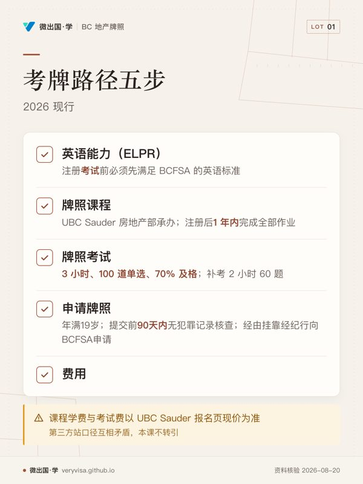
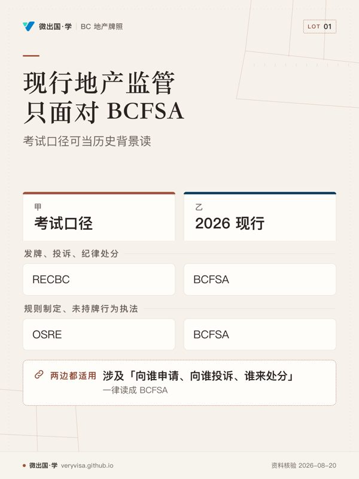
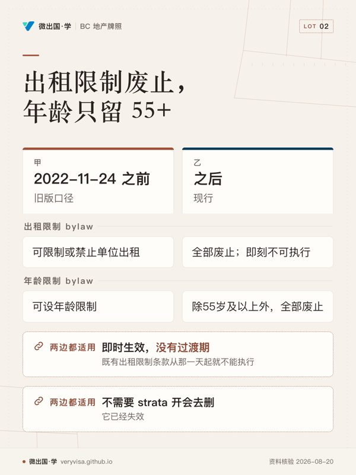
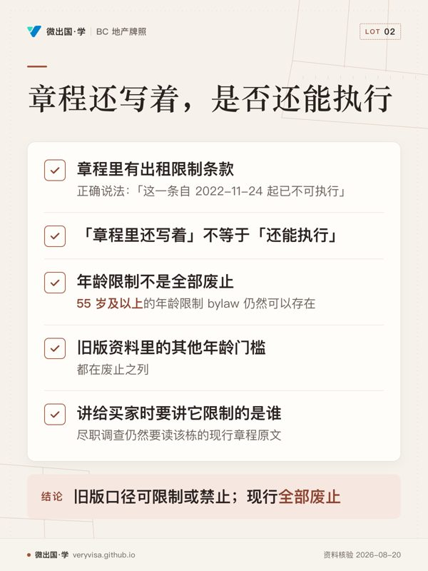
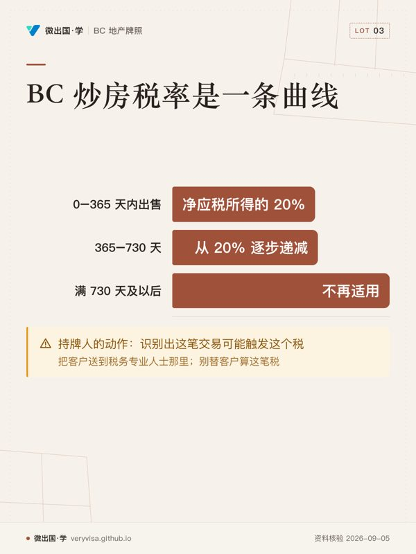
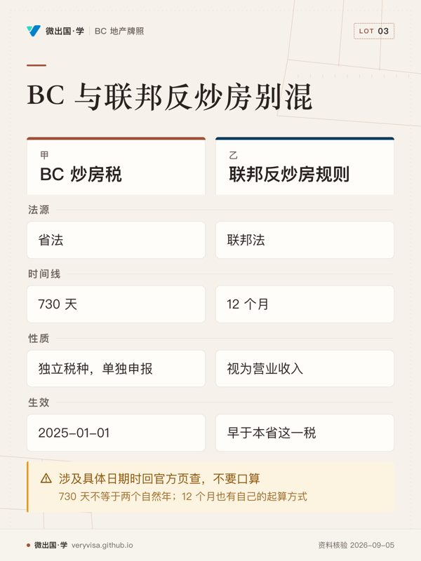

微出国 · 学
路线 › 知识卡
知识卡：不看正文也能拿到核心内容
全站 10 张知识卡，按页面分组。一张卡只画正文里的一段——一个判断、一条算法、一份清单；卡上每个字都能在对应页面的正文里找到（资料核验 2026-08-20）。
路线（首页）
- 先看先看英语这一格：关键卡在考试注册之前，不要放到后面的申请阶段。
- 易漏课程期限从注册后起算；无犯罪记录核查看提交前的时间窗，两者不要混。
- 下一步去路线，把英语、课程、考试、申请逐项对照自己的进度。

- 先看先看右栏：办现行事项时，目标机构已经统一。
- 易漏左栏只是历史角色；遇到申请、投诉或处分，不能按旧机构分工理解。
- 下一步去练习，看到机构名先判断它是在讲历史还是现行职责。
共管物业的出租与年龄限制

- 先看先看出租限制那一行：这里是从可设到不能执行的整段切换。
- 易漏章程里仍留着文字，不代表这条规则还能执行；删除不是生效条件。
- 下一步去讲义，拿现行章程练习区分出租条款与年龄条款。

- 先看碰到留存文字，先判效力，不要从存在本身推出限制仍有效。
- 易漏年龄例外的具体措辞各栋不同，仍需回到该栋现行章程。
- 下一步去练习，分别处理出租条款和年龄门槛，不混成一个结论。
BC 炒房税：考试口径里没有的一整个税种

- 先看先看中段：这不是固定税率，而是继续持有时往下走的曲线。
- 易漏持有天数在非购买方式取得、继承、楼花等情形另有规则，豁免也有清单。
- 下一步去讲解，先识别是否可能触发，再把计算问题交给税务专业人士。

- 先看先看时间线一行：两套规则用的计时单位不同，最容易混写。
- 易漏同一交易可能同时落入两套制度，也可能只触发其中一套。
- 下一步去练习，用具体日期判断该查哪套官方规则，再找税务专业人士。